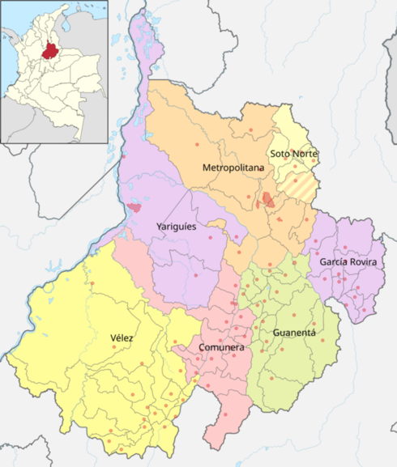
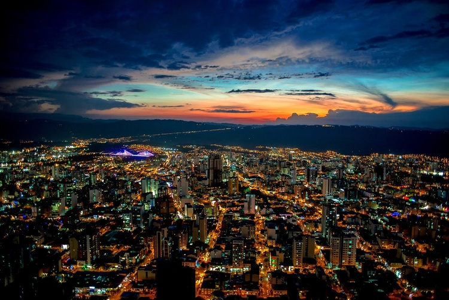
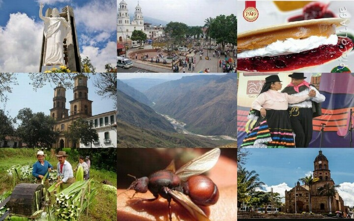
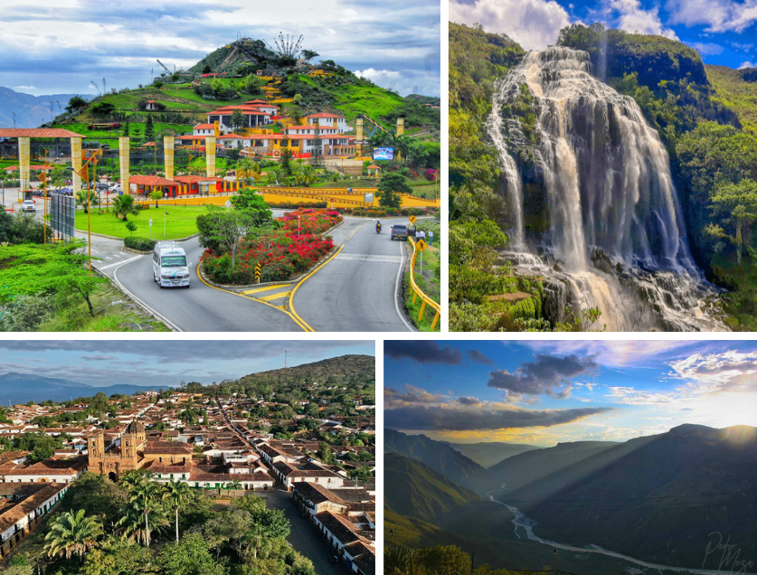

El departamento de Santander es una región situada en el noreste de Colombia, conocida por su diversidad geográfica, cultural e histórica. Limita al norte con el mar Caribe, al este con Norte de Santander, al sur con Boyacá y al oeste con Antioquia.
Su capital es Bucaramanga, se ubica en la región nororiental del país. Conocida como la "Ciudad Bonita" por su clima agradable y sus paisajes, Bucaramanga está situada a aproximadamente 400 metros sobre el nivel del mar y tiene una población de alrededor de 600,000 habitantes.


La cultura santandereana es rica y diversa, con influencias indígenas, españolas y africanas. La región es famosa por sus tradiciones en la música, especialmente el joropo y la banda. Las festividades, como la Feria Bonita en Bucaramanga, celebran la cultura local y atraen a visitantes de todo el país. Además, Santander es conocido por su gastronomía, que incluye platos típicos como la bandeja paisa y el arequipe.
El departamento ofrece numerosos atractivos turísticos, entre los que destacan:
★Cañón del Chicamocha: Un impresionante cañón que ofrece actividades de aventura como parapente y senderismo.
★Parque Nacional del Chicamocha: Ideal para los amantes de la naturaleza, con vistas panorámicas y opciones de ecoturismo.
★Barichara: Considerado uno de los pueblos más bellos de Colombia, con calles empedradas y arquitectura colonial.
★Gámbita: Conocido por su paisaje montañoso y su producción de café.
